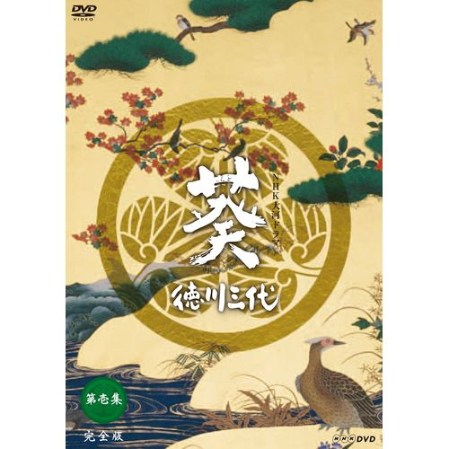
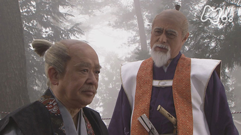

NHK TAIGA DRAMA / 2000作品收录
AOI · TOKUGAWA SANDAI
葵德川三代
葵 徳川三代
天下可以交接。
父亲的影子，如何继承？
2000 年 NHK 大河剧。故事从关原之战前夕展开，以德川家康、秀忠、家光三代为轴，描绘江户幕府形成的过程。战场之外，父子、家族与政治秩序，构成另一场漫长的交接。
编剧：詹姆斯三木（ジェームス三木）
音乐：岩代太郎 · 解说人物：德川光圀（中村梅雀 饰）

保留原图构图；不是剧照或人物肖像。

权力的交接，
不止发生在仪式上。
© NHK · 保留原始画面
THREE GENERATIONS / 三つの視点
把卷轴交给下一代。
选择一代，切换人物与观看线索。这里讨论剧作的入口，不代替历史研究，也不泄露人物结局。
FIRST GENERATION / 德川家康
建立秩序的人。
津川雅彦 饰 · 秀忠之父，家光之祖父
三代叙事的起点。剧中的家康从关原前后的权力角逐走向幕府的建立；在成为大御所之后，他与秀忠之间的政治关系仍是重要线索。
观看线索 · 本页编辑提问
当开创者仍在场，继承者怎样获得自己的判断空间？
BEYOND THE SUCCESSION家谱之外，
家谱之外，
也有人在说话。
阿江 · 岩下志麻 饰
秀忠的妻子、家光的母亲。沿着她的视角，可以把将军家的继承问题重新放回家庭关系中理解。
淀殿 · 小川真由美 饰
丰臣秀赖的母亲。与德川三代并置的丰臣家，是理解剧中家族与政治关系的重要一端。
作品资料、图片与阅读边界 +
日本电视剧，2000 年播出。人物及演员据 NHK 官方资料整理；二代目尾上辰之助现名四代目尾上松绿。本页的观看提问是编辑性的阅读建议，不是 Hakuya 的个人观后感。
DVD 封面来自 NHK 集团官方商城；第 20 集剧照来自 NHK On Demand。版权归 NHK 及原权利人。图片仅作作品识别与介绍，不授予再利用许可。
NHK：作品介绍、主创与 DVD 封面 ↗NHK：第 20 集「二元政治」与剧照 ↗NHK：德川家康题材回顾与三代演员 ↗NHK On Demand：作品与演员资料 ↗HAKUYA'S WATCH JOURNAL 已收录 · 暂未写下个人短评